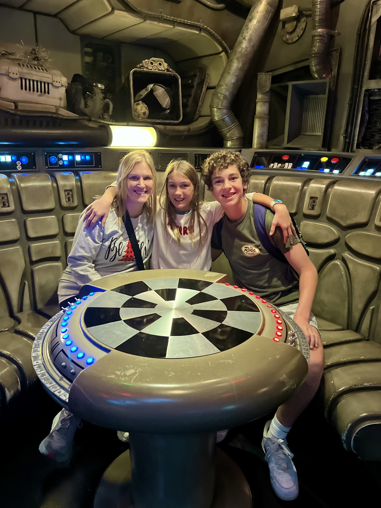

Who is Hudson Mitchell-Pullman
My background in CompSci and Interest in AI
Hey everyone! My name is Hudson, and I'm a 15-year-old freshman at Patrick Henry High School in San Diego. After procrastinating for a year, I recently took the plunge into Python, machine learning, and AI. I began to informally learn prompt engineering when ChatGPT and other GenAI platforms were first released to the public, however, I hadn't begun the programming and mathematical aspects until recently. My school doesn't really have any CS courses, so I'm totally self-taught and have just learned online through YouTube and Codecademy and by reading books. I've completed Codecademy's data science and AI foundations course and am now diving into AI and ML engineering.
I just finished my first project analyzing the associations between mental and physical health of over 100,000 university students, using the Healthy Minds Survey dataset. If any of you are interested in checking out the code or my brief findings on GitHub, here's the link.
Additionally, I submitted my application to the AI4ALL summer program at Stanford and I plan to also apply to MIT's CogWorks summer program. I'd say that during the next semester and over the summer, my goal is to learn as much as possible about website development, ML, DL, AI, and the mathematics behind it. Furthermore, I am really looking forward to meeting similarly driven high school and university students. I think it's imperative to collaborate and socialize with others who share similar interests, so if any of you have any advice for meeting other peers who are interested in creating meaningful projects with AI, I'd love to hear from you!
I want to get to know all of you and hopefully learn new things, not only about computer science and WebDev, but also about this whole process and how you would go about meeting people who share my passion and excitement with regards to programming, CogSci, and AI.
Education has always been my passion, and I want to apply AI in schools, starting with my high school. When I'm not studying, I'm soaking up knowledge—taking courses, watching videos, reading, and working on Khan Academy. Let's make this an awesome Spring WebDev cohort!!!
Other Important Aspects of my Life
In Order of Importance
- Inspiring my younger sister to feel fulfilled and make a difference
- Being a kind and thoughtful son
- Having meaningful and introspective conversations
- Being curious and constantly learning
- Writing and journaling
- Model UN
- Playing tennis
- Cooking
- Writing

Things I'm not